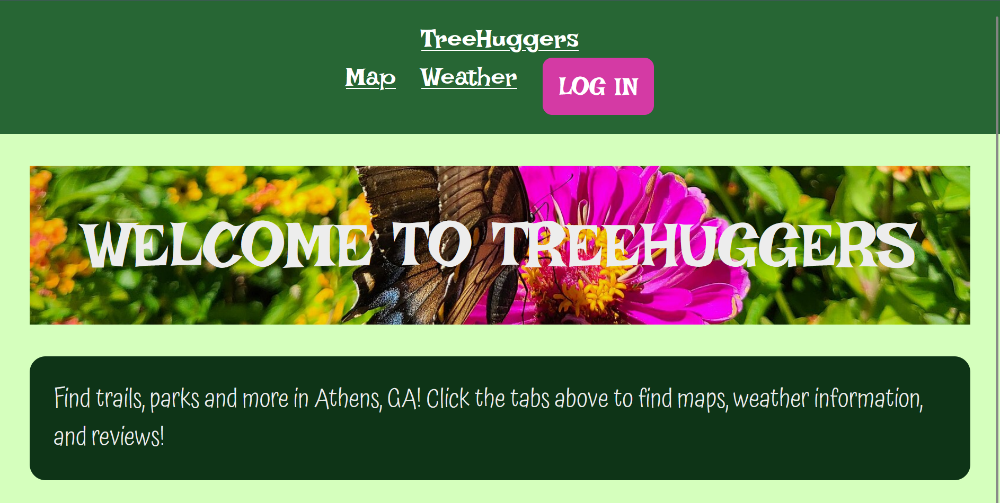

I have experience with basic html, css, and JavaScript, as well as more
advanced webdev tools such as React, Vite, Node.js, and Vue. I also have
experience with 3D in browsers with Three.js and databases with mongoose and mongodb.
Art Around the World
Art Around the World was my final project submission for NMIX4020.
I chose to utilize JavaScript as well as several APIs to create a website
that could be used as a fun educational tool to learn more about art history.
You can learn more about how I made the site Here!
I created this site as another project for for NMIX4020. It documents my time studying
abroad at Sophia University in Tokyo. It was made with basic html & css.
TreeHuggers

For my final project in CSCI4300,
I worked with a group to create a nature-spot finder website for Athens, Georgia.
I worked on the website design, login and signup components, and authorization.
This site uses React, Node.js, mongoose, mongodb, and NextAuth.js.